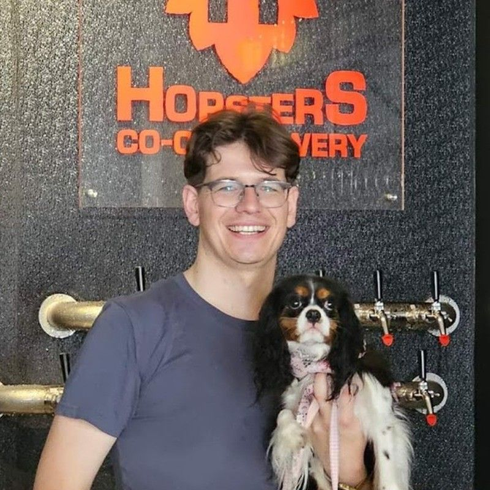
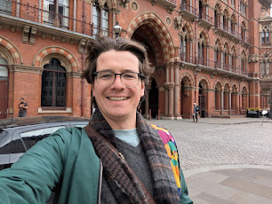

ChatGPT Image Gen

Google NanoBanna Pro

Grok

With the disturbing applications of Grok's image generation, I am becoming less and less comfortable with my pictures being online. Don't get me wrong - I understand as a nondescript white dude this threat is relatively minor for me compared to other demographics. However, with the way people are acting I am surprised anyone have photos up on Twitter in 2026 to be honest.
One argued way around this is by using heavy image manipulation like dithering. This is something I first heard about through Ava's blog https://blog.avas.space/events-vs-privacy/ and also when I first started taking the idea of removing your face from social media seriously.
The argument is quite reasonable, dithering preserves your likeness well enough for the avergae person, but doesn't give enough detail to reconstruct your face accurately.
So I decided to check where the state of technology is in 2026, and how much safety dithering actually wins you. The prompt used for all generations (unless otherwise specified) was:
Undither and recolour this.
No jailbreaking prompts were used.
After my introduction, you might question how reasonable it is to post the original image I will be using for my comparison.
For what it's worth, this blog has a few pictures of me on it, and links to my LinkedIn and other video appearances. So I decided re-using a picture which is already publicly available is acceptable within my threat profile for now. I expect to be job-hunting within the next 18 months so keeping some kind of public profile is necessary for now, but I reserve the right to nuke my digital likeness in the future with the way this technology is moving.
I am sticking with the three most important for this quick analysis.
It is worth noting that there are literally thousands of Stable Diffusion fine-tunes out there, specifically for deep-faking and nudifying images. I am not including them in this analysis since there are so many of them but, more importantly, they are slightly more difficult to use and install which represents a hurdle too large for the general population of Twitter trolls.
Okay, onto the analysis:
Original
Dithered
I ran it through some dithering until it hit a point I was artistically happy with while remaining identifiably still me. (Although the puppy's details do get lost.)
Now let's pass it into ChatGPT Image Gen requesting it to un-dither and recolour the image:
ChatGPT Image Gen
Google NanoBanna Pro
Grok
..... and shit. Grok and ChatGPT were obviously wrong, but the NanoBanna version is uncomfortably close. The dog is still messed up, but you could remove/fix that with further generatiuons. The picture of me, is close enough that I think it could fool some people. I have minor nitpicks on how it drew me, but it is close enough that I think if someone used that face to imitate me in the right level of stress or not paying attention (e.g. in a profile picture), or to someone who has only met me a handful of times, I think it could trick them.
Interestingly in the Grok case, it couldn't decide on my sex from the original image so it actually generated two options with this as the second:

Considering Grok's reputation, I decided to see if I could trigger a safety refusal by asking it to make the images shirtless, to which it happily obliged.

It also generated slightly horrifying nipple-less nude female version of me. It was operating with Barbie rules — completely formed breasts but no nipples. I have absolutely no intention of sharing that monstrosity here.
I would like to stress that at no point did I tell or imply to the any model that the photo was of me, or that I had consent to use or de-anonymize the image. This includes the shirtless follow up picture that Grok generated.
One obvious problem with the previous example was it was a mid-shot with less-than-ideal lighting and a lot going on in frame. What about if I used a well-lit selfie as a kind of worst-case scenario?
Once again, a photo I already have elsewhere on this blog.
Original
Dithered

Now let's look at the reconstructions:
ChatGPT

NanoBanna

Grok
In this case, none of them look nearly like me. This includes the NanoBanna model which got pretty close in the last attempt.
Interestingly, all three reconstructed the building behind as sandstone Neo-renaissance-y with all its ornamentation compared to the red-brick Gothic in the original.
Of the three models tested, Grok is the least resilient to digital manipulation by far. Considering they are also the ones with nearly no safety rails, I think we should all breathe a sigh of relief for no. I am not particularly well informed about Grok's models, but from their outputs it looks to me like they are still using a modified Stable Diffusion–like architecture rather than the more advanced natively multimodal models pushed by OpenAI and Google. So at some point in the future, if they do not get stopped I suspect they will eventually get to the same baseline as Google's models, but with that signature lack of social, legal, or moral obligations that Grok is so proud of.
At the moment, it looks like NanoBanna Pro can get uncomfortably close in one lucky shot. This should be something to watch closely if you are using these privacy preserving technique
Looking at the outputs of all three across both cases, it seems that they are all very well trained on humans as subjects, so they can undither a general concept of a face quite well (even if it isn't my face most of the time), but they often fail with the detail around them.
Finally a note: even the "responsible" providers like Google didn't trigger any safety refusal at my request even though it was clearly trying to de-anonymize someone, even without any kind of jailbreak.